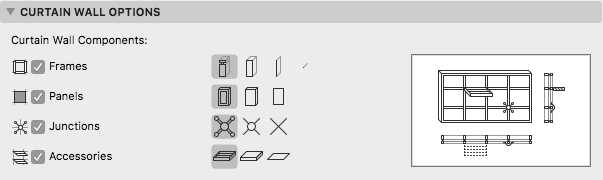

API_CurtainWallModelViewOptions
Represents the model view options of Curtain Walls made with Curtain Wall Tool. The entire structure is Archicad only.
typedef struct {
char cwFrameDetailLevel;
char cwPanelDetailLevel;
char cwJunctionDetailLevel;
char cwAccessoryDetailLevel;
} API_CurtainWallModelViewOptions;
Members
- cwFrameDetailLevel
- Detail level of Curtain Wall Frames
Possible values:API_CurtainWallCompShow_Full,API_CurtainWallCompShow_Simplified,API_CurtainWallCompShow_Schematic,API_CurtainWallCompShow_Linear,API_CurtainWallCompShow_None. - cwPanelDetailLevel
- Detail level of Curtain Wall Panels
Possible values:API_CurtainWallCompShow_Full,API_CurtainWallCompShow_Simplified,API_CurtainWallCompShow_Schematic,API_CurtainWallCompShow_None. - cwJunctionDetailLevel
- Detail level of Curtain Wall Junctions
Possible values:API_CurtainWallCompShow_Full,API_CurtainWallCompShow_Simplified,API_CurtainWallCompShow_Schematic,API_CurtainWallCompShow_None. - cwAccessoryDetailLevel
- Detail level of Curtain Wall Accessories
Possible values:API_CurtainWallCompShow_Full,API_CurtainWallCompShow_Simplified,API_CurtainWallCompShow_Schematic,API_CurtainWallCompShow_None.
Remarks
These settings correspond to the relevant items in the Document/Model View/Model View Options dialog/Curtain Wall Options page.

Requirements
- Version: API 22 or later
- Header: APIdefs_Environment.h
See Also
API_ModelViewOptions,
APIEnv_GetViewOptionsID, APIEnv_ChangeViewOptionsID,
API_NavigatorView,
API Types